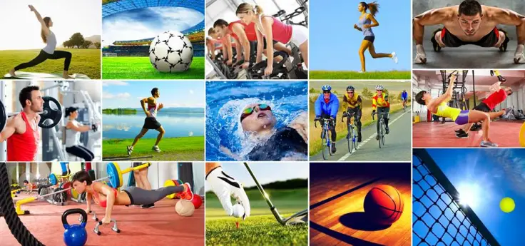

Bienvenido al sitio web sobre el Deporte en la vida cotidiana
Explora como el deporte puede mejorar tu vida diaria, desde el bienestar fisico hasta el equilibrio emocional.
El deporte desempeña un papel crucial en la vida cotidiana, impactando positivamente diversos aspectos de la salud fisica y mental. Este tema de investigación explora la importancia de la actividad fisica regular en la promoción de un estilo de vida saludable y equilibrado. A través de un análisis exhaustivo de los beneficios fisiológicos y psicológicos del ejercicio, aqui proporcionamos recursos valiosos para ayudar a las personas a integrar hábitos deportivos en su rutina diaria.
La sociedad cada vez otorga más importancia a esta práctica que, sin lugar a dudas, es una forma de mantener saludable el cuerpo humano.

Consejos y Recomendaciones
Descubre consejos prácticos para incorporar el deporte en tu vida diaria y mejorar tu bienestar general.
A continuación, te ofrecemos algunos consejos simples pero efectivos para que el deporte se convierta en parte esencial de tu rutina y contribuya a tu salu y bienestar
- Empieza despacio: Si eres principiante, comienza con ejercicios ligeros para evitar lesiones. Puedes aumentar gradualmente la intensidad a medida que te sientas más cómodo.
- Encuentra algo que disfrutes: Elige actividades físicas que te diviertan. Ya sea caminar, correr, nadar o bailar, hacer ejercicio será más placentero si disfrutas de la actividad.
- Establece metas realistas: Define objetivos alcanzables a corto y largo plazo. Esto te motivará a seguir adelante y medir tu progreso.
- Integra el ejercicio en tu rutina diaria: Encuentra momentos convenientes para hacer ejercicio, ya sea por la mañana, durante la pausa para el almuerzo o por la noche. La consistencia es clave.
- Varía tu rutina: Cambia tus actividades regularmente para evitar el aburrimiento y desafiar diferentes grupos musculares.
- Escucha a tu cuerpo: Presta atención a las señales de tu cuerpo. Si sientes dolor inusual, detente y consulta a un profesional de la salud.
- Combina ejercicios aeróbicos y de fuerza: Incluye tanto actividades cardiovasculares como entrenamiento de resistencia para obtener beneficios completos.
- Consiéntete con descanso: El descanso es esencial para la recuperación. Asegúrate de incluir días de descanso en tu rutina para evitar el agotamiento.
- Consulta a un profesional: Antes de realizar cambios significativos en tu rutina de ejercicio, es recomendable consultar con un médico o un entrenador personal.
Estos consejos te ayudarán a integrar el deporte de manera positiva en tu vida cotidiana, mejorando tu salud física y mental. ¡Haz clic a continuación para descubrir más consejos prácticos!
Click aqui para ver más consejos